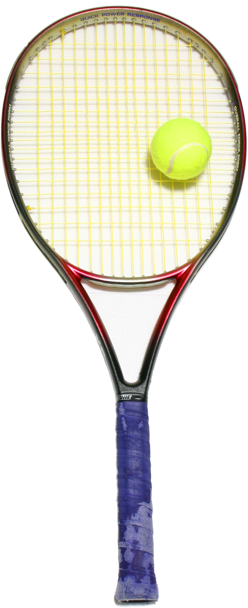

Contact Info:
Here are links to my GitHub and LinkedIn:
Welcome to my portfolio webpage. My name is Alex and I'm located in the state of West Virginia (not the same as western Virginia!). I discovered Thinkful in 2023 and have since started on a journey to pursue a career in software engineering.
One of the reasons I left medical school to pursue a different career is because I believe that I will be able to learn and do my best work and in an environment that I have more control over. That is one of the reasons Thinkful's online curriculum appealed to me. Furthermore I believe that the following qualities will allow me to succeed in the Thinkful program:
These are qualities that would allow success in most fields, but having practiced these in the medical field, I feel ready and excited to apply these to the Thinkful program and my future career.

One of my favorite pastimes is playing computer games with my friends. We all join a shared discord so we get to play games together even though we live states apart/far away from each other. Our favorite game is Dota 2.
I have been playing tennis since high school. It's harder to find people to play tennis with than dota 2 but it is a passion of mine. I also love to watch, talk about, and follow professional tennis (ATP/WTA).
Here are links to my GitHub and LinkedIn: